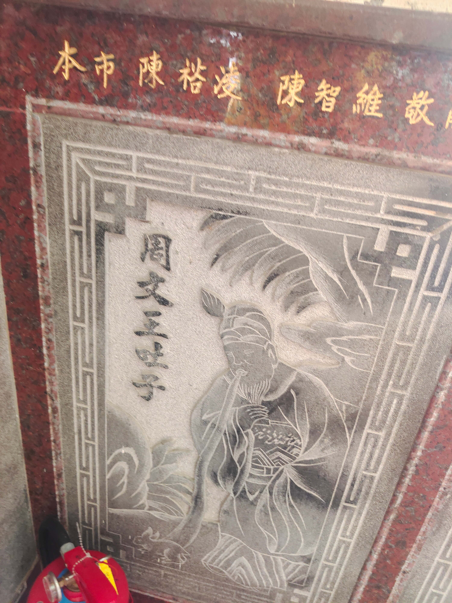

周⽂王吐⼦
會說話的石頭

圖 周⽂王吐⼦
故事發⽣在商朝末年，⻄伯侯姬昌，也就是後來的周⽂王，因為德⾼望重，被紂王忌憚，囚禁在羑⾥七年。這段期間，他反覆推演伏羲先天八卦，推衍出六⼗四卦，後⼈稱之為「⽂王聖 卦」，對後世《易經》發展有極深遠的影響。 在他被囚的歲⽉中，長⼦伯⾢考為救⽗親，進宮獻寶，不幸遭妲⼰陷害，還被殘忍地殺害。更駭⼈聽聞的是，紂王聽信讒⾔，命⼈將伯⾢考的⾁做成⾁包，送給⽂王。奸⾂放出風聲：「⽂王的卦若靈，就會知此為⼦⾁，不敢吃；若不靈，⾃會吃下。」 ⽂王含淚吞下⾁包，為的是保命與等待⽇後報仇。最終，他在⼤⾂散宜⽣的幫助下，重獲⾃由，踏上歸鄉之路。 然⽽，途經臨潼關時遭阻，幸得昔⽇所救的義⼦雷震⼦現⾝相助，才得以平安返國。令⼈震撼的是，⽂王剛⼀回到故⼟，腹中劇痛，竟吐出三團⾁。那三團⾁落地後，化作三隻⽩兔，奔入草叢。⺠間傳說，這三隻⽩兔正是伯⾢考的靈魂所化——⽂王吃⼦之⾁，如今以這樣神異的⽅式「帶⼦回鄉」，既是悲劇，也是圓滿。 這幅彩繪正呈現這段充滿忠孝與神異⾊彩的故事，也提醒我們，在亂世中堅守仁德與智慧，終將得天佑護持。歡迎⼤家細細品味這幅作品所傳達的歷史與情感。
資料來源： 褒忠泰安宮